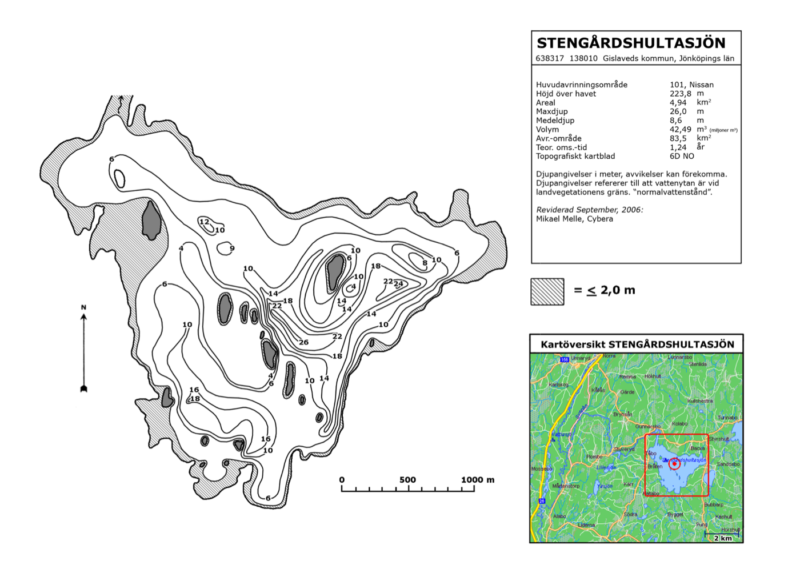

Hämtar väderdata…

Tryck (40%): sjunkande lufttryck (−1 till −4 hPa/dygn) ger högst poäng – klassiskt tecken på att fisken aktiverar sig inför en väderomslag. Stabilt tryck är okej, snabbt stigande tryck (högtryck som byggs) ger lägst poäng.
Vind (35%): svag till måttlig vind (ca 1,5–5 m/s) ger bäst poäng – den krusar ytan, syresätter och driver smäfisk mot lä-stranden. Stiltje och hård vind (>8 m/s) ger sämre poäng. Fiskedagens poäng använder bara dagens vindstyrka, men var i sjön-tipset och markeringen på kartan väger istället ihop vindriktningen från de senaste 5 dygnen (idag räknas tyngst, sedan avtagande) – bytesfisk och plankton hinner drivas mot en strand under flera dagars enahanda vind, inte bara under en enda dag.
Måne (25%): ny- och fullmåne ger högst poäng enligt solunarteori, kvarteren lägst. Gryning och skymning lyfts alltid fram som bästa tider oavsett månfas.
Förväntat fiskedjup: sjöns yttemperatur uppskattas genom att glidande medelvärdet av lufttemperaturen de senaste ~10 dygnen, eftersom vatten släpar efter lufttemperaturen. Utifrån det och månaden gissar appen om sjön är skiktad (sommar, språngskikt oftast 5–8 m i Stengårdshultasjön), omblandad (vår/höst, fisken sprids över alla djup) eller vintersskiktad (kallast vid ytan/isen, varmast i djuphålorna). Lillesjön är för grund för att skikta sig nämnvärt. Det finns ingen riktig temperaturmätare i sjöarna – se det som en kvalificerad gissning, inte ett facit.
Betestips: bygger på tre saker – uppskattad vattentemperatur (styr storlek: mindre/långsammare i kallt vatten, större/piggare i varmt), molnighet mitt på dagen som en proxy för ljusförhållande (soligt → naturtrogna färger, gärna i skugga; mulet → klarare kontrastfärger som chartreuse/orange/firetiger eftersom fisken då hittar bytet mer på vibration än syn) och det förväntade fiskedjupet ovan (styr om det blir yt-, mellandjupt eller djupt drag/jigg). Det är vedertagna tumregler bland sportfiskare, inte siktdjupsmätningar – grumligt vatten efter till exempel kraftigt regn kan tala för klarare färger även en solig dag.
Väderdata kommer från Open-Meteo. Appens sandlåda tillåter inte att hämta data live från webbläsaren, så sidan bär istället med sig en sparad prognos som uppdateras varje gång appen publiceras om (se datumet högst upp om det visas). Månfasen räknas alltid fram lokalt och är alltid aktuell. Djupkartor: Stengårdshultasjön från iFiske.se, Lillesjön från Gislaveds kommuns lodkarta (Myrica AB, 1994). Detta är en tumregelsbaserad hobbymodell, inget vetenskapligt facit – väder på plats och eget fiskeöga väger tyngst.